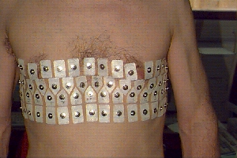
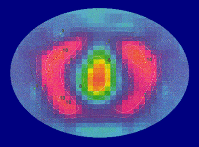
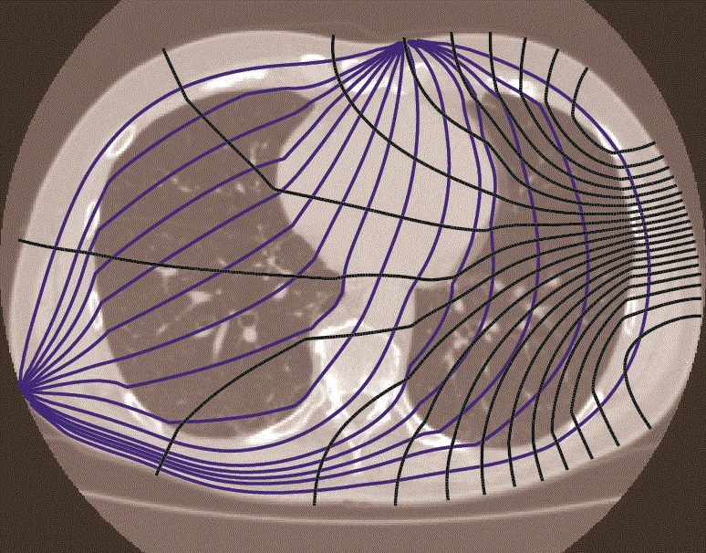
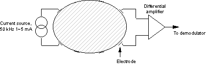

Introduction to Electrical Impedance Tomography
Quick overview of the EIT technology
Introduction
Electrical impedance tomography, EIT (also called applied potential tomography), is a novel imaging technique with applications in medicine and process control. Compared with techniques like computerised x-ray tomography and positron emission tomography, EIT is about a thousand times cheaper, a thousand times smaller and requires no ionising radiation.

Further, EIT can in principle produce thousands of images per second. Its major limitations are its low spatial resolution, and - in the medical field - large variability of images between subjects. Recordings are typically made by applying current to the body or system under test using a set of electrodes (Fig. 1, Oxford Brookes), and measuring the voltage developed between other electrodes. To obtain reasonable images, at least one hundred, and preferably several thousand, such measurements must be made.

In the medical field, the most studied applications for EIT are measurement of gastric emptying and lung function (Fig. 2). In the industrial field typical applications are imaging the distribution of oil and water in a pipeline and imaging the flow of substances in a mixing vessel. In some ways industrial applications are more favourable for EIT because it is usually possible to use a rigid, fixed array of electrodes. The fixing of electrodes on the human body is one of the residual problems facing medical EIT.
Physical principle
EIT produces images of the distribution of impedivity (or, more commonly, resistivity), or its variation with time or frequency, within the tissue. There is a large resistivity contrast (up to about 200:1) between a wide range of tissue types in the body (Geddes and Baker 1967). It ought therefore to be possible to use resitivity to form anatomical images. Furthermore, there is often a significant contrast between normal and pathological tissue. For example, (Grant 1923) found that, at 1 kHz, cerebral gliomas had a resistivity about half that of normal tissue. To measure resistivity or impedivity, a current must flow in the tissue and the resulting voltages be measured. This applied current will be referred to as the excitation current (below current paths).

In practice almost all EIT systems use constant current sources, and measure voltage differences between adjacent pairs of electrodes. To obtain an image with good spatial resolution, a number of such measurements is required. This can be achieved by applying different current distributions to the body, and repeating the voltage measurements. From the set of measurements, an image reconstruction technique generates the tomographic image. Mathematically, the known quantities are the voltages and currents at certain points on the body; the unknown is the impedivity or resistivity within the body. At low frequencies, these quantities are related by Laplace’s equation Eq. 1:
\[ \nabla \cdot \sigma \nabla \phi = 0 \tag{1}\]
where \(\sigma\) is the conductivity (admittivity may be represented by a complex sigma, \(\phi\) is the potential and \(\nabla\) is the del (vector differential operator) operator. \(\sigma\) and \(\phi\) are spatial fields whose magnitudes are functions of position. \(\phi\) is also a non-linear function of \(\sigma\). In practice, the solution of Laplace’s equation is very sensitive to noise in the measurements, and normalisation techniques must be used. Most in-vivo images have been produced using linearised, approximating techniques. These attempt to find a solution for a small change in resistivity from a known starting value. Until recently, the change in resistivity was measured over time, and EIT images were inherently of physiological function. It is now possible to produce anatomical images using the same reconstruction technique, by imaging changes with frequency.
A practical EIT system: the Sheffield Mark 1
A number of practical data acquisition schemes have been reported. For illustration this section describes the Sheffield Mark 1 system (Brown and Seagar 1987), whose operation is relatively straightforward. It requires that 16 electrodes be distributed evenly in the same plane around the body. The EIT system applies a constant current of 1-5 mA at 50 kHz to an adjacent pair of electrodes. Voltages are measured between the other adjacent pairs (see Fig. 4). It then switches the current to another pair of electrodes, and measures a second set of voltages. It is unusual to make voltage measurements from electrodes that are carrying current, since the voltage drop across the electrode-skin resistance is unknown. The Mark 1 system can therefore make 13*16 = 208 measurements, of which half are independent (the other half being related to the first by reciprocity).
